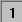

レイヤの追加と配置
Customize-Add-Arrange-Layer
サマリー
通常のグラフページには、一組のX, Y (およびZ)座標軸、 1つ以上のデータプロット、テキストや描画オブジェクトの3つの要素が含まれます。Originでは、これら3つの要素を移動可能で、サイズ変更可能なレイヤと呼ばれる単位を組合せています。1つのページには最大121個のレイヤを含めることができ、1つのレイヤだけを一時点でアクティブにすることができます。
学習する項目
- グラフに含まれているレイヤの数を知る
- データがどのレイヤにあるかを表示する
- レイヤを入れ替える
ステップ
データをインポートする
- 標準ツールバーのインポートASCIIボタン
 をクリックします。「ASCIIのインポート」ダイアログボックスが開きます。
をクリックします。「ASCIIのインポート」ダイアログボックスが開きます。
- Originフォルダに移動し、Samples フォルダ内にあるGraphingフォルダに移動します。ファイルのリストから Wind.dat
を選択します。
- 開くをクリックします。データファイルがワークシートにインポートされます。
データをプロットする
- SpeedとPower列を選択します。
- 2Dグラフギャラリーの折れ線ボタン
 をクリックします。折れ線グラフが作成されます。このデータは、制御可能な2つのY軸を持つ2Y軸グラフにプロットした方が良いでしょう。
をクリックします。折れ線グラフが作成されます。このデータは、制御可能な2つのY軸を持つ2Y軸グラフにプロットした方が良いでしょう。
- 右上のXボタンをクリックして、このウィンドウを閉じます。ウィンドウを隠すか削除するよう、催促されます。非表示化ボタンをクリックします。（削除をすると、元に戻すことができず、グラフを再作成する必要があります。非表示化は画面からグラフを閉じますが、プロジェクトエクスプローラを使って、後で表示する事ができます。
- SpeedとPower列を選択したままにしておきます。２Dグラフギャラリーの「2重Y軸」ボタン
 をクリックします。この新しいグラフには、2つのレイヤがあります。
をクリックします。この新しいグラフには、2つのレイヤがあります。
データがどのレイヤにあるかを表示する
まず、1つ目の方法は、凡例に表示する方法です。
- プロジェクトエクスプローラウィンドウのGraph1をダブルクリックします。Graph1が開き、アクティブな子ウィンドウになります。
- 「フォーマット：作図の詳細(ページ)」を選択し、「凡例/タイトル」タブをクリックします。
- %1, %2の解釈モードを「データレンジ」にします。
- OKをクリックします。
2つ目の方法は、ステータスバーに表示する方法です。
- プロジェクトエクスプローラウィンドウのGraph2をダブルクリックします。Graph2が前面に表示され、アクティブな子ウィンドウになります。
- レイヤ1アイコン
をクリックして、レイヤ1をアクティブにします。
- Originステータスバーの右下に [WIND]WIND!Col(Speed)[1:12]のように表示されます。
- レイヤ2に対して同様に操作すると、 [WIND]WIND!Col(Power)[1:12]のように表示されます。
3つ目の方法はメニューに表示する方法です。
- Graph2をアクティブにします。
- レイヤ1アイコンを右クリックします。コンテキストメニューの一番下に、データプロットのリストが表示されます。チェックが付いているデータプロットがアクティブなデータプロットです。
- レイヤ2を右クリックして、レイヤ2にプロットされているデータのリストを表示します。
- データメニューから表示することも可能です。
4つ目の方法は、作図のセットアップを使う方法です。
- Graph2をアクティブにしたまま、レイヤ1アイコンを右クリックしてコンテキストメニューから作図のセットアップを選択します。
- 開いた作図のセットアップダイアログで、プロットリストを拡張し、レイヤ2にあるデータを見ることができます。この方法のメリットは、すべてのレイヤのデータを1度に見ることができることです。
 |
作図のセットアップダイアログで3つのパネルを全ての表示するために ボタンをクリックしてグラフタイプパネルを開き、再度をクリックして利用可能なデータパネルを開きます。 ボタンをクリックしてグラフタイプパネルを開き、再度をクリックして利用可能なデータパネルを開きます。
詳細な情報は作図のセットアップで作図を参照してください。
|
- Speedデータプロットの「表示」チェックボックスのチェックを外します。
- OKをクリックします。このデータプロットは、非表示になるだけで、凡例にはレイヤ内に、そのデータプロットがまだ存在していることが示されています。
最後の方法は、「作図の詳細」ダイアログを使う方法です。
- Graph2の線＋シンボルグラフのいずれかをダブルクリックします。
- 左側のツリーを拡張して、レイヤ1とレイヤ2に含まれる内容を表示します。
- Speedと Power のデータプロットのチェックを外します。
- OKをクリックします。